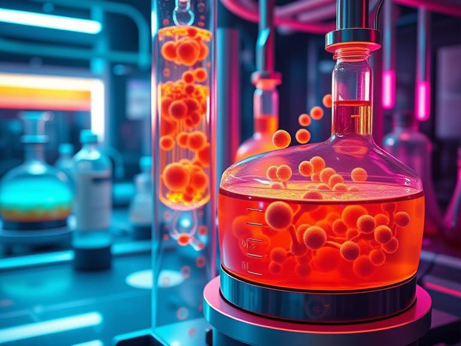
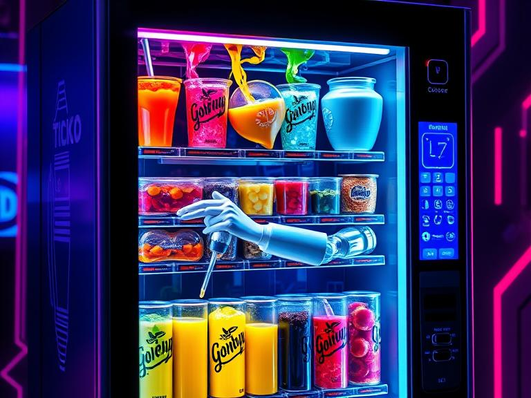
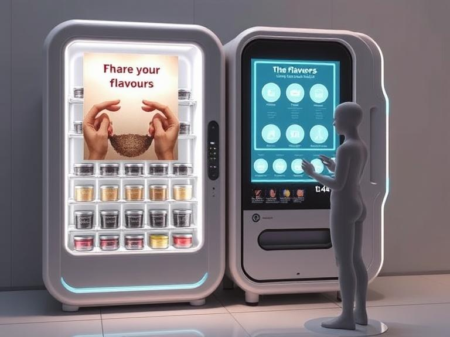

Как технологии создают уникальные ароматы
Представьте мир, где вы можете заказать вкус "секс на пляже", "свадьба лучшего друга" или даже "вкус победы". Звучит как фантастика? Уже нет. Благодаря синтетической биологии и искусственному интеллекту это становится реальностью. Давайте разберёмся, как бактерии и нейросети меняют наше представление о вкусах.
Всё начинается с микроорганизмов. Некоторые бактерии способны синтезировать ароматические соединения — те самые молекулы, которые придают запах и вкус ягодам, фруктам, специям и другим продуктам. Их внутриклеточные механизмы уже достаточно хорошо изучены, и с помощью современных методов молекулярного редактирования, таких как CRISPR-Cas9, их можно "перепрошить" для производства практически любого аромата.
Бактерии в биореакторе, синтезирующие ароматические соединения.
Но что, если мы хотим не просто базовые вкусы, а что-то уникальное? Здесь на помощь приходит искусственный интеллект. Мы обучаем нейросеть на огромной базе данных вкусовых профилей, чтобы она могла генерировать миксы по заданным параметрам. Например, вы можете запросить что-то "свежее с ягодным вкусом" или "тропическое с ноткой экзотики".
Нейросеть анализирует сочетания вкусов и создаёт уникальные миксы.
Представьте себе вендинговый автомат, но вместо шоколадок или напитков он выдаёт уникальные ароматизированные продукты. Нейросеть управляет сортировочно-замешивательным механизмом, который комбинирует сиропы с разными вкусами. Затем этот микс смешивается с табачным листом, основой для напитка или десерта — и вуаля! Вы получаете продукт с уникальным вкусом, созданным специально для вас.
Футуристический вендинговый автомат, создающий персонализированные вкусы.
Эта технология легко масштабируется: от небольших кафе до крупных производств. В будущем такие системы могут появиться в каждом доме, позволяя создавать уникальные вкусы прямо на кухне.